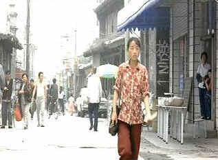

| Not
One Less/B+,B+ |
| Columbia/1999/106/ANA
1.85 |
Remarkable filmmakers are magnets for
insight and inspiration. Zhang Yi-mou has a camera that acts like a divining rod for good ideas. Not
One Less is Zhang in contemporary mode. Much like the wonderful The Story of Qui Ju,
Zhang brings style and imagination to the modern Chinese provinces and finds a heroine in a small
village.
 |
| Wei in the city. ©Columbia |
Not One Less begins as one movie and turns
magically into another. Thirteen-year-old girl Wei is recruited by a remote village mayor to
substitute for the school teacher who must leave on a one month trip. The children, as adorable a
bunch as you'd ever want to see on film, present various challenges to Wei's authority and her lack
of experience. Somehow, Wei manages to communicate with these kids on a level close to their
hearts. But, when something unexpected turns up, she must shift direction. With the help of the
children, Wei does what she must.
Zhang treats kids with the same perspicacity that Truffaut had in 400 Blows
and with the same natural innocence that Morris Engel captured in The
Little Fugitive. It's no surprise to find out that
the child actors who populate the village are not professionals but children from the surrounding
area where Not One Less takes place.. They are just kids entranced by the camera, guided
with delicacy through the process of filmmaking by a director who exudes comfort and confidence.
Wei Minzhi plays the young substitute with a forthright purposefulness. This young reed of an
actress will not be swayed. She even reminds me of how a young Gong Li might have looked. Zhang
Huike, the rebellious tike who stimulates most of the action, is very charming.
Zhang clearly owes a debt to Italian
neo-realists. Whether shooting in the village or the small city, Zhang's makes the viewer feel like
he is there. There are few cinematic flourishes or frills. The camera serves the tale with
elegance. Though the pace may seem slow at times, and perhaps the sentiment borders on maudlin,
Zhang elevates the material with a keen sense of timing.
This is a very easy DVD to enjoy. The photography is presented with
natural ease. The contrast is in good balance with the color saturation. Colors are stable and
consistent in various lighting schemes. Blacks are rich without masking detail. The image is always
sharp, and the yellow English subtitles are easy to read. Dolby Digital 2.0 surround provides good
matrixed ambiance.
|
|

Selections from the feature archive include articles on Akira Kurosawa,
Frank Darabont, Blonde Bimbos, Hollywood
Street Gangs, or Vietnam:
The Hollywood Pariah, and many more....
The Exquisite Muse of Zhang Yimou

The powerful image-making of Zhang Yimou has revealed itself in
virtually every film he has made. Coupled with his remarkable collaboration with actress Gong Li,
Zhang's has built a stunning body of work Click the image to read all about it.


DVDPlanet is the DVD
incarnation of legendary laser retailer Ken Crane's. Deep discounts and serious service.
 Brad Lang continues to add more interesting material to the extensive
collection at Classic
Movies. Everything from actors and actress to your favorite directors is
linked at the site. Brad Lang continues to add more interesting material to the extensive
collection at Classic
Movies. Everything from actors and actress to your favorite directors is
linked at the site.

The DVD Forum is an international association of hardware
manufacturers, software firms and other users of Digital Versatile Discs (the "DVD
Format"), created for the purpose of exchanging and disseminating ideas and information about
the DVD Format and its technical capabilities, improvements and innovations.

The
Movie Poster Archive includes extensive poster images from the films of stars like Susan Hayward,
Kirk Douglas, Katharine Hepburn and many more. Our featured star is Doris Day. |